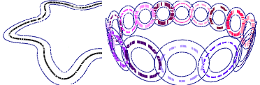

Equidistant lines.
Let's create equidistant lines both with positive and negative shift to all flat objects located in the current scene. For this, we'll check the type of each object in the scene using the cycle statement. If the object is nonlinear and flat we'll build to it equidistant lines with a shift 0.3 and -0.3 from each side:
sgCObject* curObj = sgGetScene()->GetObjectsList()->GetHead();
std::vector<sgC2DObject*> good_objcts;
int i=0;
while (curObj)
{
SG_OBJECT_TYPE ot = curObj->GetType();
if (ot==SG_OT_CIRCLE ||ot==SG_OT_ARC || ot==SG_OT_SPLINE || ot==SG_OT_CONTOUR)
{
sgC2DObject* o2D = reinterpret_cast<sgC2DObject*>(curObj);
if (!o2D->IsLinear() && o2D->IsPlane(NULL,NULL))
good_objcts.push_back(o2D);
}
curObj = sgGetScene()->GetObjectsList()->GetNext(curObj);
}
size_t sz = good_objcts.size();
for (size_t i=0;i<sz;i++)
{
sgCContour* eq1 = good_objcts[i]->GetEquidistantContour(0.3, 0.3, false);
if (eq1)
sgGetScene()->AttachObject(eq1);
sgCContour* eq2 = good_objcts[i]->GetEquidistantContour(-0.3, -0.3, false);
if (eq2)
sgGetScene()->AttachObject(eq2);
}
See also:
sgC2DObject sgC2DObject::GetEquidistantContour
sgCObject::GetType sgC2DObject::IsLinear sgC2DObject::IsPlane
sgGetScene sgCScene::GetObjectsList sgCScene::AttachObject sgCObject::SetAttribute
Illustration:
